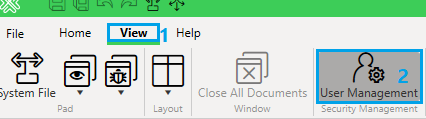
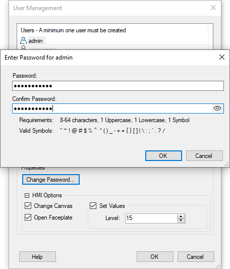
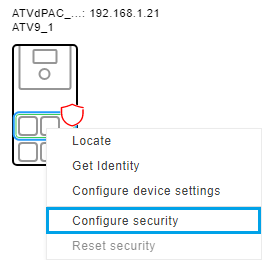
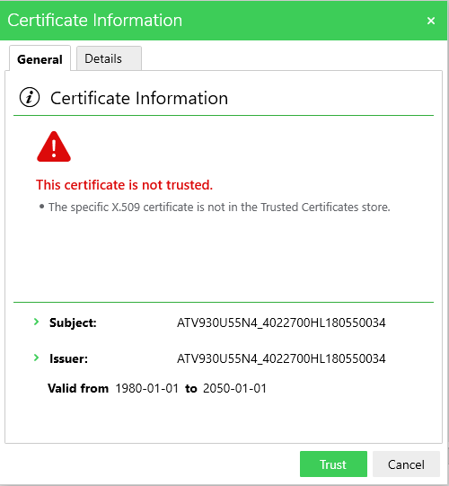
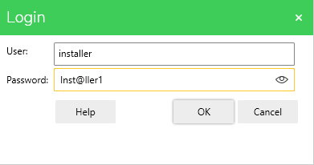
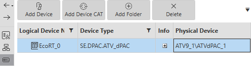

If the device password has been forgotten, the user can reset the security of the ATV Distributed PAC, using the drive's Graphic Display Terminal (VW3A1111).
Update the firmware package of:
The Drive (Refer to the firmware update with EcoStruxure Automation Device Maintenance chapter for more details on this step).
The ATV Distributed PAC (Refer to the firmware update with EcoStruxure Automation Device Maintenance chapter for more details on this step).
Update the labels and languages of the Graphic Display Terminal (VW3A1111) (Refer to the firmware update with EcoStruxure Automation Device Maintenance chapter for more details on this step).
| Device | ATV6xx | ATV9xx | ATV340 | ATV Distributed PAC |
|---|---|---|---|---|
| Firmware Version greater than | V3.7IE94_B04 | V3.8IE94_B04 | V3.6IE94_B04 | V3.1IE09B01-22.1.23006.00 |
Local reset the security on the Graphic Display Terminal (VW3A1111) by following these steps:
| WARNING | |
|---|---|
Restart the drive manually
Reset the password of your existing solution in EcoStruxure Automation Expert:


Configure the security of your existing solution in EcoStruxure Automation Expert :
Open the system tab
Start monitoring

Trust the certificate information.


User: installer
Password: Inst@ller1
In logical devices,

Open the Deploy and Diagnostic editor, do the following:
Compile the solution
Login using the EcoStruxure Automation Expert user management credentials.
Deploy the solution
Run device actions
You can now start the local HMI using the EcoStruxure Automation Expert user management credentials.